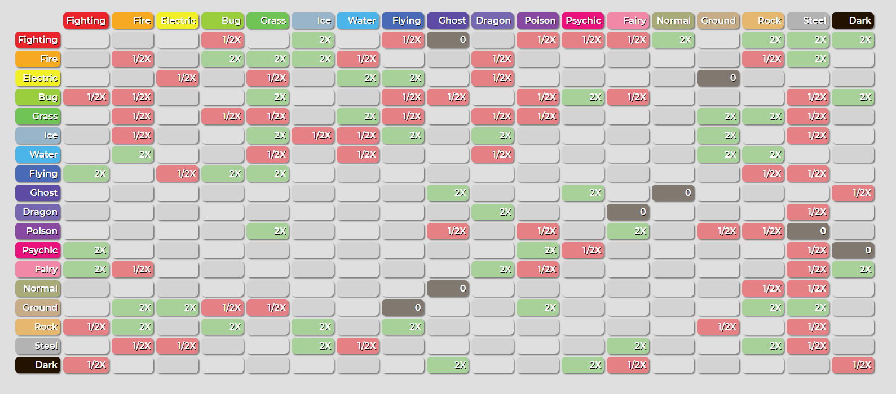

Responsive Pokemon Type Advantage Chart
This is a project I have already been working on for a few semesters. I keep changing it as I learn more about CSS, but have minimal JavaScript so far. I would like to adapt it to add what I've learned in JavaScript so far this semester.
- Purpose: The purpose of this is to create an aesthetically pleasing and responsive Pokemon type chart. It will be responsive to how the user hovers over the chart if I can make it look good without being too janky, and when the user clicks on a specific type, it will reset the chart to include double type advantages and disadvantages. It will also have a quick tutorial the first time the user loads the page that session.
- Audience: The audience for this app would be fans of Pokemon who want a better type advantage chart than what's out there, and will include double type advantages at the click of a button
- Data Sources: The data sources will come from a local JSON file
- Initial module list: Pokemon type object, Reset Values
Wireframe
This is a basic layout with colors and fonts subject to change.